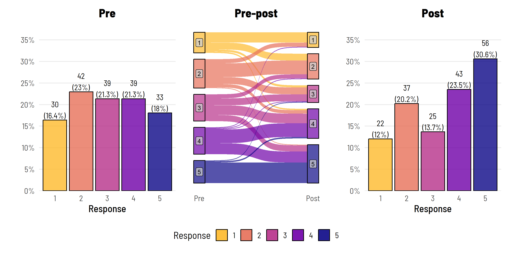
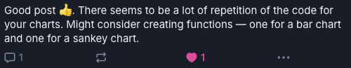

# Code for the first bar plot
library(simstudy)
library(ggsankey); library(patchwork)
library(thekidsbiostats) # install with remotes::install_github("The-Kids-Biostats/thekidsbiostats")
p1 <- dat %>%
filter(group == "Intervention") %>%
group_by(pre) %>%
tally() %>%
mutate(freq = n / sum(n),
res = str_c(n, "\n(", round(freq*100, 1), "%)")) %>%
ggplot(aes(x = as.factor(pre), y = freq)) +
geom_bar(aes(fill = as.factor(pre)), stat="identity", alpha = 0.8,
colour = "black") +
theme_institute(base_size = 14) +
theme(legend.position = "none",
panel.grid.major.x = element_blank(),
plot.title = element_text(hjust = 0.5)) +
scale_y_continuous(labels = scales::percent_format(),
breaks = seq(0, max_prop, by = 0.05),
expand = expansion(mult = c(0, 0.1))) +
coord_cartesian(ylim = c(0, max_prop)) +
scale_fill_viridis_d(option = "plasma", end = 0.85, direction = -1) +
labs(title = "Pre",
fill = "Response",
x = "Response", y = "") +
geom_text(aes(label = res), vjust = -0.1,
family = "Barlow Semi Condensed") +
guides(fill = guide_legend(nrow = 1))Overview
(Lengthy) readable code. Efficient functions comprised of the minimum number of characters necessary. An age old battle in programming.
Way back when there were only two users on Bluesky, I linked to one of our earlier blog posts where we presented a nice way to visualise pre-post ordinal Likert data.

The only other user on Bluesky at the time commented:

All of the points raised were correct. It was a good post, but there was a lot of repetition in the code. Which got me thinking about the age old battle in programming…
The case for code
There are (always) a lot of people out there learning to use R, and a lot of them love experimenting with the great visualisation tools R has to offer. And a lot of those people are still learning to be code savvy. I know this because I cross paths with this type of user multiple times a week—copy and pasting examples from blogs (like this) and/or using trial and error to learn. It is this large cohort of users that one can appeal to by sharing verbose code.
Some benefits of posting code:
- If one encounters an error, it is easy for someone still learning to run the code in stages to identify where the problem may be,
- If one wants to make minor changes (colours, line thickness, alpha etc.), they can easily see where to dive in and do so,
- It is crystal clear what and where the code can (successfully) be customised. For example, customisations can be made without having to worry whether those arguments will be honoured by the function and not return a deluge of errors, and
- It reinforces the amount of work that goes into producing an end result, and
- It gives the reader direct line of sight to foundational code concepts and principles, as opposed to these being hidden and/or the outputs appearing seemingly by magic.
For example:
Also, in no time at all, one can copy that code into an LLM, and ask it to explain what is happening each step along the way (assuming, of course, the author didn’t take the time to do that themselves…).
# Filter and process data for the "Intervention" group
p1 <- dat %>%
filter(group == "Intervention") %>% # Keep only rows where 'group' is "Intervention"
group_by(pre) %>% # Group data by 'pre' variable
tally() %>% # Count the number of occurrences in each 'pre' group
mutate(
freq = n / sum(n), # Calculate frequency for each group as a proportion
res = str_c(n, "\n(", round(freq * 100, 1), "%)") # Create label with count and percentage
) %>%
# Start plotting the processed data
ggplot(aes(x = as.factor(pre), y = freq)) + # Define x-axis as 'pre' factor and y-axis as frequency
# Add bars to the plot
geom_bar(
aes(fill = as.factor(pre)), # Use 'pre' as fill color for each bar
stat = "identity", # Use actual values for bar height
alpha = 0.8, # Set transparency of bars
colour = "black" # Add black outline to bars
) +
...
...The full commented code for the above plot is below.
Code
# Filter and process data for the "Intervention" group
p1 <- dat %>%
filter(group == "Intervention") %>% # Keep only rows where 'group' is "Intervention"
group_by(pre) %>% # Group data by 'pre' variable
tally() %>% # Count the number of occurrences in each 'pre' group
mutate(
freq = n / sum(n), # Calculate frequency for each group as a proportion
res = str_c(n, "\n(", round(freq * 100, 1), "%)") # Create label with count and percentage
) %>%
# Start plotting the processed data
ggplot(aes(x = as.factor(pre), y = freq)) + # Define x-axis as 'pre' factor and y-axis as frequency
# Add bars to the plot
geom_bar(
aes(fill = as.factor(pre)), # Use 'pre' as fill color for each bar
stat = "identity", # Use actual values for bar height
alpha = 0.8, # Set transparency of bars
colour = "black" # Add black outline to bars
) +
# Apply custom theme for aesthetic consistency
theme_institute(base_size = 14) + # Use institute's custom theme with base font size 14
theme(
legend.position = "none", # Remove legend from the plot
panel.grid.major.x = element_blank(), # Remove major grid lines on x-axis
plot.title = element_text(hjust = 0.5) # Center-align the plot title
) +
# Customize the y-axis scale
scale_y_continuous(
labels = scales::percent_format(), # Show y-axis labels as percentages
breaks = seq(0, max_prop, by = 0.05), # Define tick marks on y-axis
expand = expansion(mult = c(0, 0.1)) # Add space above the bars for clarity
) +
# Set the limits of the y-axis
coord_cartesian(ylim = c(0, max_prop)) + # Constrain y-axis from 0 to 'max_prop'
# Define color palette for fill colors
scale_fill_viridis_d(
option = "plasma", # Use "plasma" color scheme from the viridis package
end = 0.85, # Limit the color intensity at the end
direction = -1 # Reverse the color scale
) +
# Add titles and labels
labs(
title = "Pre", # Set the main title for the plot
fill = "Response", # Label for the fill legend (not shown since legend is removed)
x = "Response", # Label for x-axis
y = "" # No label for y-axis
) +
# Add text labels on top of each bar
geom_text(
aes(label = res), # Use 'res' (count and percent label) for text labels
vjust = -0.1, # Position text slightly above each bar
family = "Barlow Semi Condensed" # Use specific font for text labels
) +
# Customize the legend layout
guides(
fill = guide_legend(nrow = 1) # Arrange legend items in a single row (applies if legend is displayed)
)The case for functions
Of course, this figure was actually used repeatedly multiple times in a report we were producing, across a range of pre-post ordinal Likert variables. So we wrapped this code into a function so it could be called and used regularly without making our actual report (.qmd) incredibly lengthy.
Some benefits of posting functions:
- All code is reusable, per se, but making the effort to put your code into a function makes it readily reuseable,
- It can remove a barrier to entry, especially for those who don’t want to clutter the
.qmdfiles or risk any copying errors—they can load the function in and get on with their day, - It can increase uptake, as more advanced users may view the solution as more robust and flexible (less customised) than they would if it is simply presented as a ‘wall of code’, and
- You can reduce the risk of errors, as the process of turning code into a more generic function often reveals areas where hard coded parameters become problematic (or where there might be a copy and paste error). This can force you to make the code more versatile and reduce the likelihood of hard coded or specific use case errors creeping in.
So what did this look like in our actual use case?
Expand the code below to see how our ordinal_plot() function was structured.
Code
ordinal_plot <- function(data,
left_var = "pre",
left_title = "Pre",
left_fill_title = "Response",
left_x_axis_label = "Response",
left_y_axis_label = "",
center_title = "Pre-Post",
center_fill_title = "Response",
center_x_axis_label = "",
center_y_axis_label = "",
right_var = "post",
right_title = "Post",
right_fill_title = "Response",
right_x_axis_label = "Response",
right_y_axis_label = "",
legend.position = "bottom",
id_var = "id") {
vars <- c(id_var, left_var, right_var)
max_prop <- dat %>%
select(all_of(vars)) %>%
pivot_longer(cols = c(!!sym(left_var), !!sym(right_var))) %>%
group_by(name) %>%
count(value) %>%
mutate(freq = n / sum(n)) %>%
.$freq %>%
max
max_prop <- plyr::round_any(max_prop, 0.05, f = ceiling)
p1 <- dat %>%
group_by(!!sym(left_var)) %>%
tally() %>%
mutate(freq = n / sum(n),
res = str_c(n, "\n(", round(freq * 100, 1), "%)")) %>%
ggplot(aes(x = as.factor(!!sym(left_var)), y = freq)) +
geom_bar(
aes(fill = as.factor(!!sym(left_var))),
stat = "identity",
alpha = 0.8,
colour = "black"
) +
theme_institute(base_size = 14) +
theme(
legend.position = "none",
panel.grid.major.x = element_blank(),
plot.title = element_text(hjust = 0.5)
) +
scale_y_continuous(
labels = scales::percent_format(),
breaks = seq(0, max_prop, by = 0.05),
expand = expansion(mult = c(0, 0.1))
) +
coord_cartesian(ylim = c(0, max_prop)) +
scale_fill_viridis_d(option = "plasma",
end = 0.85,
direction = -1) +
labs(
title = left_title,
fill = left_fill_title,
x = left_x_axis_label,
y = left_y_axis_label
) +
geom_text(aes(label = res), vjust = -0.1, family = "Barlow Semi Condensed") +
guides(fill = guide_legend(nrow = 1))
p2 <- dat %>%
rename(Pre = !!sym(left_var), Post = !!sym(right_var)) %>%
make_long(Pre, Post) %>%
mutate(node = factor(node, levels = c(7, 6, 5, 4, 3, 2, 1)),
next_node = factor(next_node, levels = c(7, 6, 5, 4, 3, 2, 1))) %>%
ggplot(aes(
x = x,
next_x = next_x,
node = node,
next_node = next_node,
fill = factor(node)
), alpha = 0.8) +
geom_sankey(alpha = 0.8, node.color = 'black') +
geom_sankey_label(
aes(label = node),
alpha = 0.8,
size = 3,
color = "black",
fill = "gray80"
) +
scale_x_discrete(expand = c(0.05, 0.05)) +
theme_institute(base_size = 14) +
theme(
panel.grid.major = element_blank(),
panel.grid.minor = element_blank(),
axis.title.y = element_blank(),
axis.text.y = element_blank(),
axis.ticks = element_blank(),
legend.position = legend.position,
plot.title = element_text(hjust = 0.5)
) +
guides(fill = guide_legend(reverse = T, nrow = 1)) +
labs(title = center_title, fill = center_fill_title, x = center_x_axis_label)
p3 <- dat %>%
group_by(!!sym(right_var)) %>%
tally() %>%
mutate(freq = n / sum(n),
res = str_c(n, "\n(", round(freq * 100, 1), "%)")) %>%
ggplot(aes(x = as.factor(!!sym(right_var)), y = freq)) +
geom_bar(
aes(fill = as.factor(!!sym(right_var))),
stat = "identity",
alpha = 0.8,
colour = "black"
) +
theme_institute(base_size = 14) +
theme(
legend.position = "none",
panel.grid.major.x = element_blank(),
plot.background = element_blank(),
plot.title = element_text(hjust = 0.5)
) +
scale_y_continuous(
labels = scales::percent_format(),
breaks = seq(0, max_prop, by = 0.05),
expand = expansion(mult = c(0, 0.1))
) +
coord_cartesian(ylim = c(0, max_prop)) +
scale_fill_viridis_d(option = "plasma",
end = 0.85,
direction = -1) +
labs(
title = right_title,
fill = right_fill_title,
x = right_x_axis_label,
y = right_y_axis_label
) +
geom_text(aes(label = res), vjust = -0.1, family = "Barlow Semi Condensed") +
guides(fill = guide_legend(nrow = 1))
p1 + p2 + p3
}You will see the use of !!sym(..) here. This is to do with ‘injecting’ ‘expressions’ within functions. It can be tricky to understand. The sym() part removes the quote marks from the string and makes it a symbol (as in, a name that relates to an object in). The !! part injects the ‘symbol’ (remember, relating to the object) rather than just injecting the ‘character string’ per se.
And how did we used it with the report (.qmd)?
...
source(".../ordinal_plot.R")
...
# Change in response - intervention group
Some descriptive text ..., and, below is the figure.
\```{r fig.width = 8, fig.height = 6}
dat %>%
filter(group == "Intervention") %>%
ordinal_plot()
\```- We certainly acknowledge that we could have included more arguments in our function to be passed through to the active code to facilitate additional on the fly customisability. The balance we settled on here was a function that was sufficiently versatile for the elements we needed to modify through our reporting use case - and we perhaps avoided obscurity by unnecessarily having ‘everything’ passed through.
Closing comments
When deciding between using basic code or wrapping that code it into functions, it’s important to balance simplicity and efficiency, and think of your audience. For R-based visualisations and reproducible research workflows used within in Quarto documents, showing basic code offers transparency and fosters learning, making it ideal for teaching or exploratory analyses. On the other hand, functions enhance re-usability and scalability, streamlining workflows for complex or repeated tasks.
By combining both approaches (in a blog post)—sharing foundational coding steps while having a more advanced option to encapsulate repetitive tasks within functions—you can assist both beginners and advanced users to create clear, flexible, and reproducible documents and workflows.
Acknowledgements
Thanks to Wesley Billingham and Dr Elizabeth McKinnon for providing feedback on and reviewing this post.
Reproducibility Information
To access the .qmd (Quarto markdown) files as well as any R scripts or data that was used in this post, please visit our GitHub:
https://github.com/The-Kids-Biostats/The-Kids-Biostats.github.io/tree/main/posts/
The session information can also be seen below.
Code
sessionInfo()R version 4.3.3 (2024-02-29)
Platform: aarch64-apple-darwin20 (64-bit)
Running under: macOS Sonoma 14.4.1
Matrix products: default
BLAS: /Library/Frameworks/R.framework/Versions/4.3-arm64/Resources/lib/libRblas.0.dylib
LAPACK: /Library/Frameworks/R.framework/Versions/4.3-arm64/Resources/lib/libRlapack.dylib; LAPACK version 3.11.0
locale:
[1] en_US.UTF-8/en_US.UTF-8/en_US.UTF-8/C/en_US.UTF-8/en_US.UTF-8
time zone: Australia/Perth
tzcode source: internal
attached base packages:
[1] stats graphics grDevices utils datasets methods base
loaded via a namespace (and not attached):
[1] htmlwidgets_1.6.4 compiler_4.3.3 fastmap_1.2.0 cli_3.6.3
[5] tools_4.3.3 htmltools_0.5.8.1 rstudioapi_0.17.1 yaml_2.3.10
[9] rmarkdown_2.29 knitr_1.49 jsonlite_1.8.9 xfun_0.49
[13] digest_0.6.37 rlang_1.1.4 evaluate_1.0.1